Linear Algebra: 0.1
Note: These are not meant to be used for self-teaching the subject. My objective is to collect the summary of all the ideas that a working
Machine Learning Researchershould be aware of. Use this as a reference to check or deepen your understanding. At the start of each post I will provide an opinionated learning strategy to teach yourself the subject from scratch in the shortest possible time. In most cases the post is based off those resources, thus the credit is due to the orginal authors.
Pointers to learn from scratch (Go through these resources in the given order.)
Read and workthrough the first 4 chapters of the book mml.
Watch through this series of videos by 3Blue1Brown - Essence of linear algebra along the way.
For all practical purposes this should suffice. But, I would also suggest to read through Linear Algebra Done Right
Note: I tried to build the subject from ground up. This will inevitably involve some proofs. You are not expected to be able to prove these but it’s good to see them atleast once. Conveniently, I have done these proofs via handwritten notes making annotation and commentry easier.I tried include the minimal set of proofs to allow the reader to deeply appreciate the topic and it’s applications.
Central Objects : Vectors and linear maps
Here we will define the lead actors - vectors(objects of study) and linear maps(mappings between these objects)
Vector Space : Set of all objects called vectors that satisfy some intuitive constraints. Consider the following vector spaces.
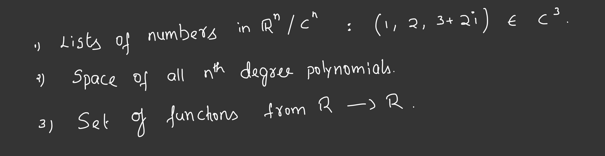
Note the commonality between the following objects. For illustration let’s use geometric vectors, that can be seen as pointed arrows within a coordinate axis, represented as a list of numbers.
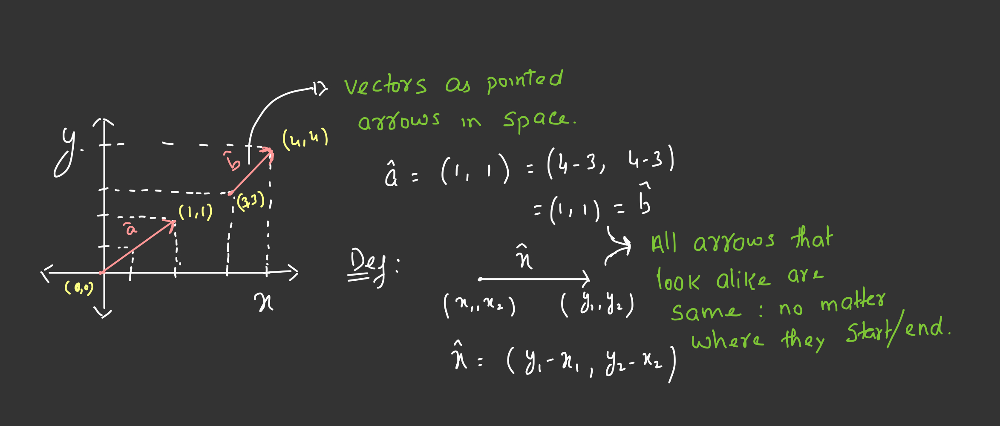
All these satisfy some intuitive properties once we define addition and scalar multiplication. Let’s call all such objects Vectors
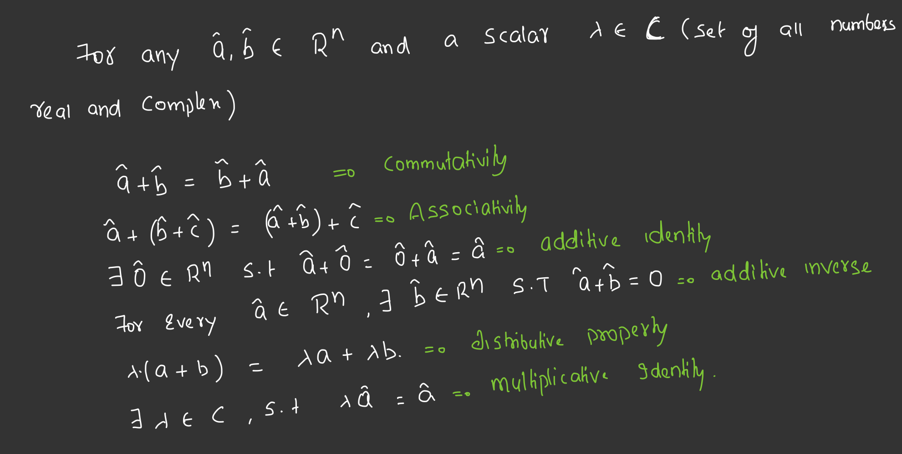
Linear Algebra studies the emergent properties of objects once we impose simple properties like commutitivity,associativity etc. Note that we are just formalizing the familiar notions. This helps us discover some very interesting properties as we shall see.
In short, we introduced the notion of vector space which consists of
- A set
Xof vectors - A set
Cof scalars
such that vectors are closed that are closed under addition,subtraction and scalar multiplication and satisfies natural associative and distributive laws.
Linear Maps
Linear Maps are the functions that map between the elements of the vector space. But not all mappings, only those that satisfy linearity conditions as outlined below:
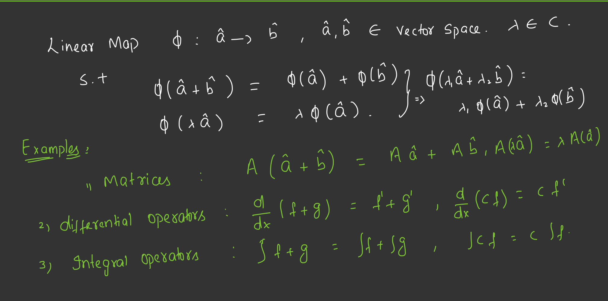
Now,If you have studied Linear Algebra, you might have jumped directly at geometric vectors and matrices. Below we will take a slightly more abstract approach that will pay dividends when we study arguably the most used decorated area the subject Matrix Decompositions - SVD and Eigen Value decomposition.
Idea 1: Spanning Vectors
Big Idea 1: All the elements of a vector space can be represented succintly as a linear combination of few a vectors. In other words,Irrespective of the vector space (geometric vectors,polynomials, functions etc), there exists a set of few vectors that can be used to generate all the elements of that set. This section builds up the material to prove this fact.
Subspace
There exist a subset of the vector space that also satisfy the properties of the vector space. This will be more clear via examples below.
Tip: To check if a set forms a valid Subspace check if the elements of the set are closed under a.
additionand b.zeroelement belongs to the set c. closed under scalar multiplication. Rest of the properties(distributivity,associativity etc) are anyways satisfied by definition(as these are subset of the vector space).
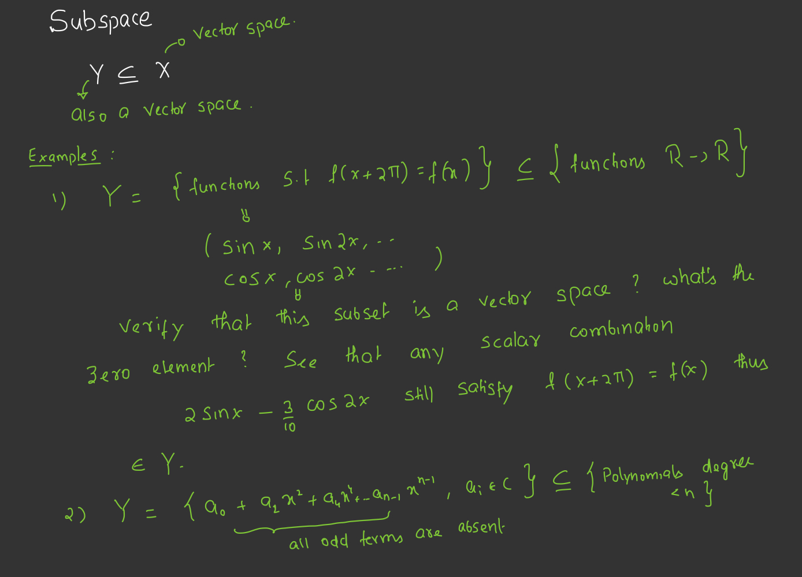
Now it is sensible to ask whether by combining two subspaces(UNION,INTERSECTION) can we get another valid subspace. Convince yourself that the INTERSECTION of two subspaces is always a subspace which is not the case for UNION. If we define the notion sum of two subspaces as the collection all elements that can be written as sum of an element from each subspace, we note that this set is also a vector space thus a subspace of the original. Also this is the smallest subspace containing both the subspaces (just like how union of two sets in set theory is the smallest set containing both the sets).
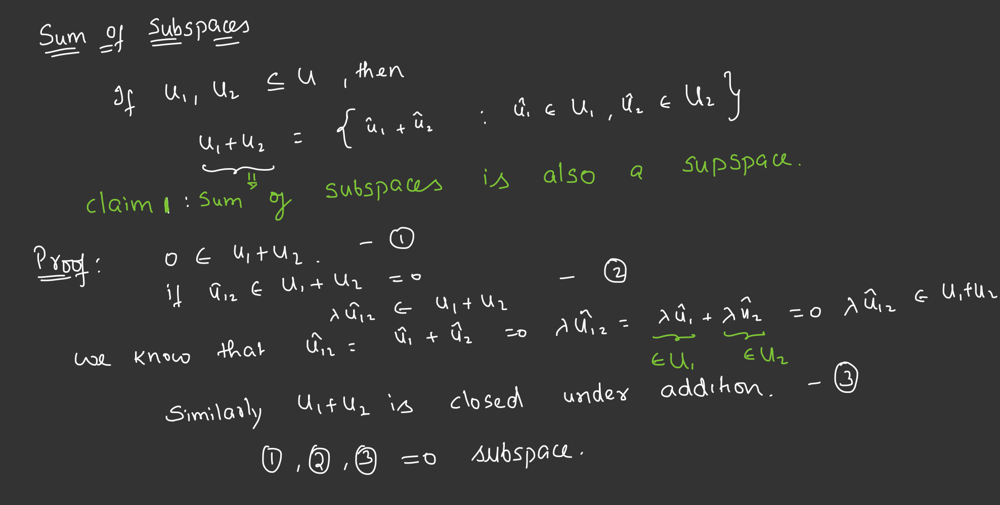
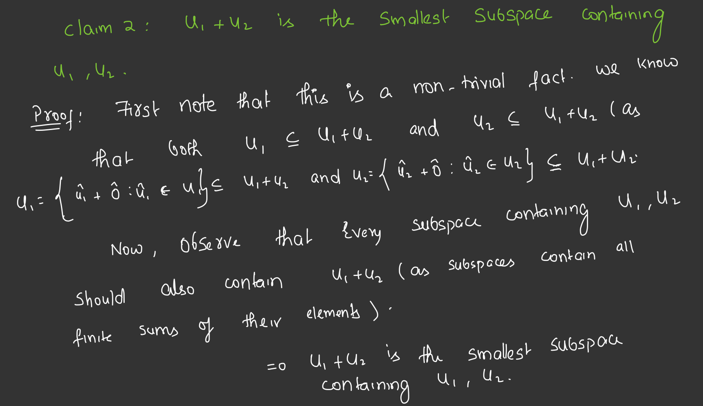
Important: Understand the above claims before proceeding.
Span,basis and linear independence
Note that give two vectors \(v_1\) and \(v_2\) the set \(V = \{\lambda_1 \hat v_1 + \lambda_2 \hat v_2: \lambda_1,\lambda_2 \in C\}\) forms a subspace. Also note that if we have another vector \(\hat{v_3} = 2\hat{v_1}\) and define the new set \(V'\) as \(V' = \{\lambda_1 \hat v_1 + \lambda_2 \hat v_2 + \lambda_3 \hat v_3: \lambda_1,\lambda_2,\lambda_3 \in C\}\), we will still have \(V = V'\). Using \(\hat {v_3}\) doesn’t give us any new vectors that is not already in \(V\). Let’s add two new words to our vocabulary Span and Linear Independence.
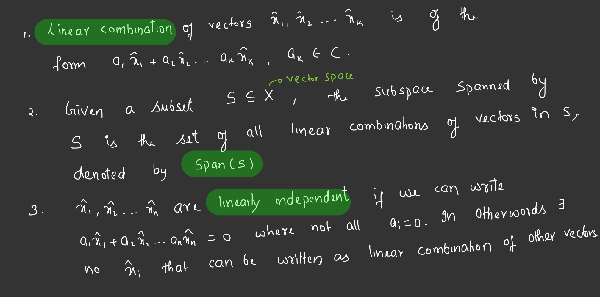
Below we see how span and linear independence are related.
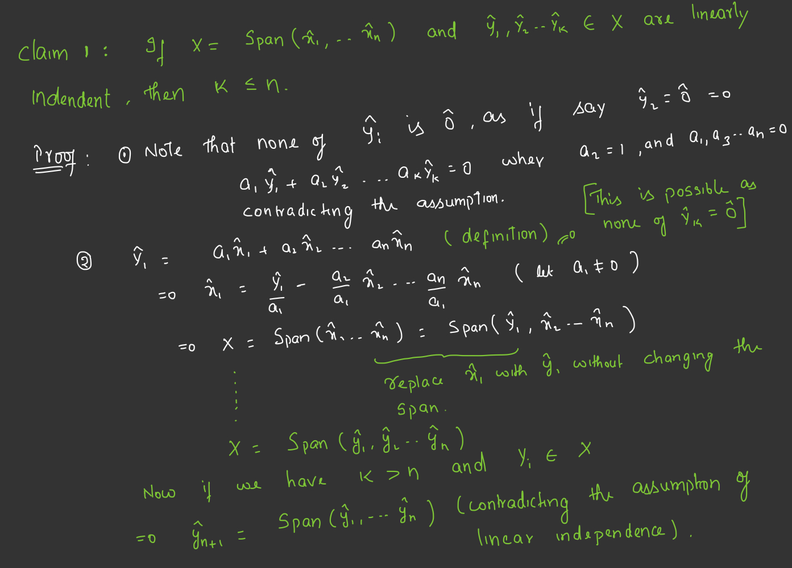
Now, we are certain that given a subspace spanned by \(n\) vectors, the subspace can also be spanned by a set of \(k\) linearly independent vectors where \(k <= n\). What’s the size of the smallest \(k\) that can still span the space ?
Basis: Set of the minimal number of vectors needed to generate all the elements of the subspace. It is easy to see that all such vectors should be linearly independent. (else it wont be the minimal set). Below examples will make the concept more concrete.
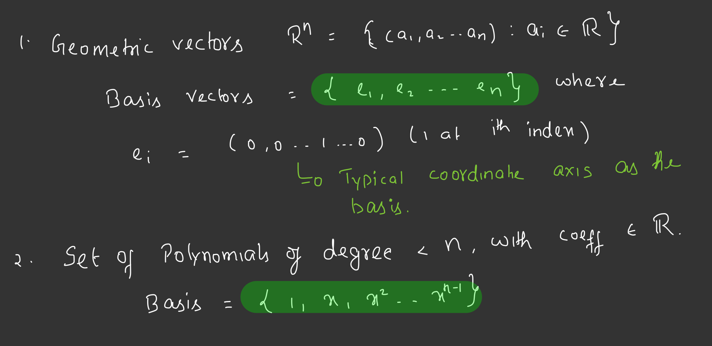
It can be trivially shown that the cardinality of the basis set(#number of vectors in the basis set) is constant, no matter which set of independent vectors are chosen. For example, in case of geometric vectors in \(R^{n}\), we could have chosen a differnt basis but it still has to have same count of vectors to span the same space. Thus we can call this cardinality the dimension of the vector space.
Now given a spanning set, how to get the basis ?
- Just remove any vector that can be expressed as a linear combination of others until no more. At th end we are left with the basis set.
Simalarly, We can build the basis set from a single vector(or a subset of the basis set) by adding vectors that cannot be expressed as a linear combination of the given set but belongs to the subspace.
To drive all these points home, let’s solve some problems dealing with span,dimension and linear dependence. Along the way we will also learn how to solve system of linear equations.
Skill 1 : Basis and solution to system of linear equations
1.Finding Solutions to system of linear equations.
This boils down to answering whether the right handside of the equation exist within the span of vectors defined by the equations as shown below.
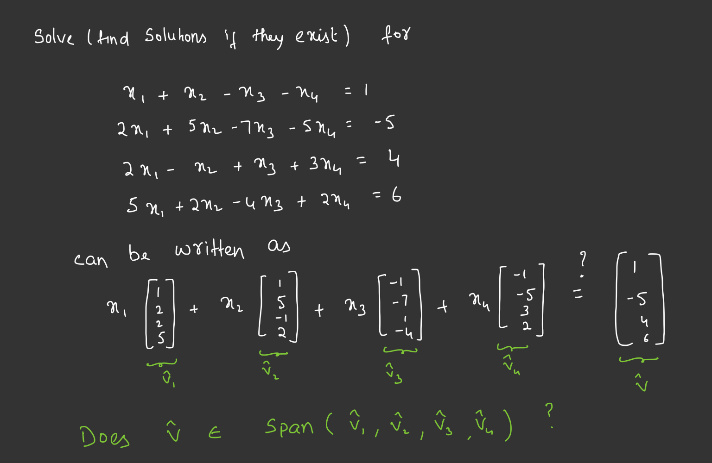
Now we know that any vector in \(R^{4}\) can be spanned by a set of 4 linearly independent vectors. Thus, if the above vectors are linearly independent we will have a unique solution,else none.(note that the uniqueness comes from the definition of basis - minimal set of linearly independent vectors.). We haven’t yet discussed how to find the coefficients - \(x_1\),\(x_2\),\(x_3\),\(x_4\). The techinque is called Gaussian Elimination in case the reader is not familiar check out this wiki entry.. Below is the solution.
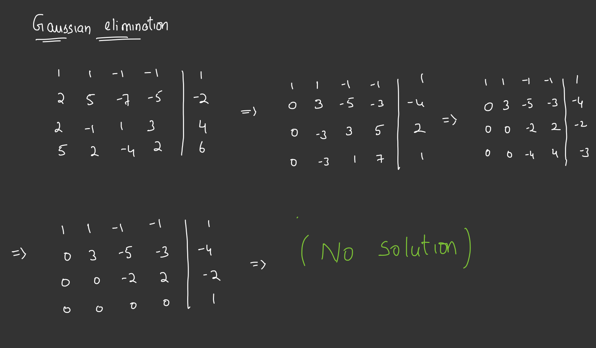
Solution Concept - Subtracting/adding one equation to the other does’nt change the solution of a system of equations. Gaussian Elimination Provides a systematic algorithm leveraging this fact. In the above question the last row reads as 0=1,thus we have no solution.
Now Let’s see a case where there can be infinite solutions.Conceptually it means the set of vectors defined by the linear equations has redundant vectors.(more vectors than the dimensionality of the space). This will give us more than one way of reaching any point.
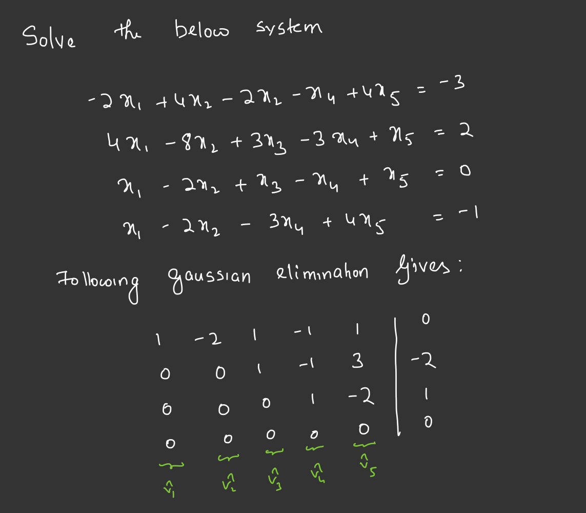
NOTE: We have 5 vectors for a 4 dimensional space.
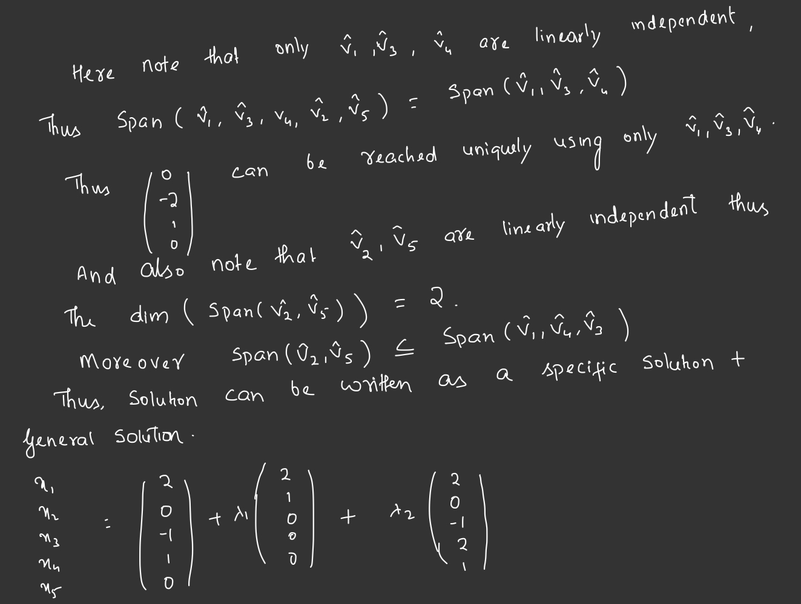
Solution Concept - The idea is to reduce the vectors such that there is a 1 at a different slot for each of the vector,making reading off linearly independent vectors easy.(as any linear combination of the previous vectors cannot produce a value in the new slot.) In the above solution we note that \(\hat v_1\),\(\hat v_3\),\(\hat v_4\) can produce 1’s at 1st,2nd and 3rd index repectively thus are linearly independent. This makes \(\hat v_2\) and \(\hat v_5\) redundant. Also observe that we can write \(\hat v_2\) as linear combination of \(\hat v_1\),\(\hat v_3\),\(\hat v_4\) implying we can have a zero. Similarly for \(\hat v_5\). Below note makes this clear.
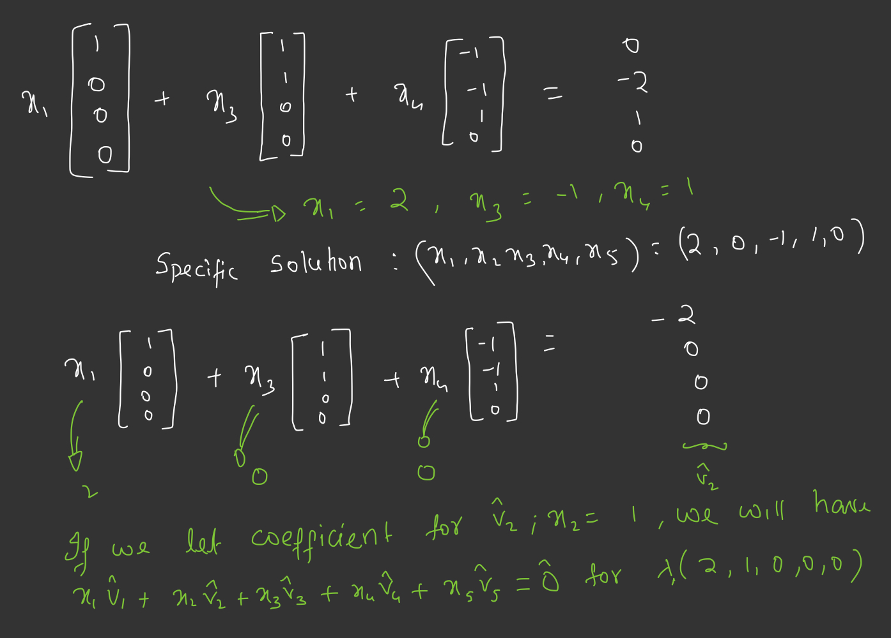
Important: If you have trouble solving above two questions, refer to the text mentioned at the beginning of the chapter. Here I only intend to show how the notion of span and independence translate to finding solutions to system of linear equations.
Before proceeding let’s consider one last problem.
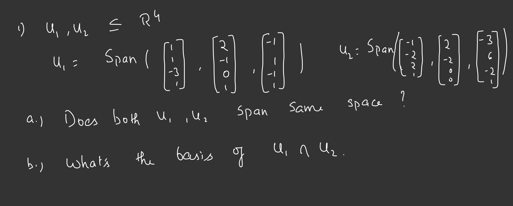
let’s start by find the basis for \(U_1\) and \(U_2\). This will let us infer the space spanned by both the sets. Note here how finding basis set is helpful as it’s the simplest representation of the underlying vector space.
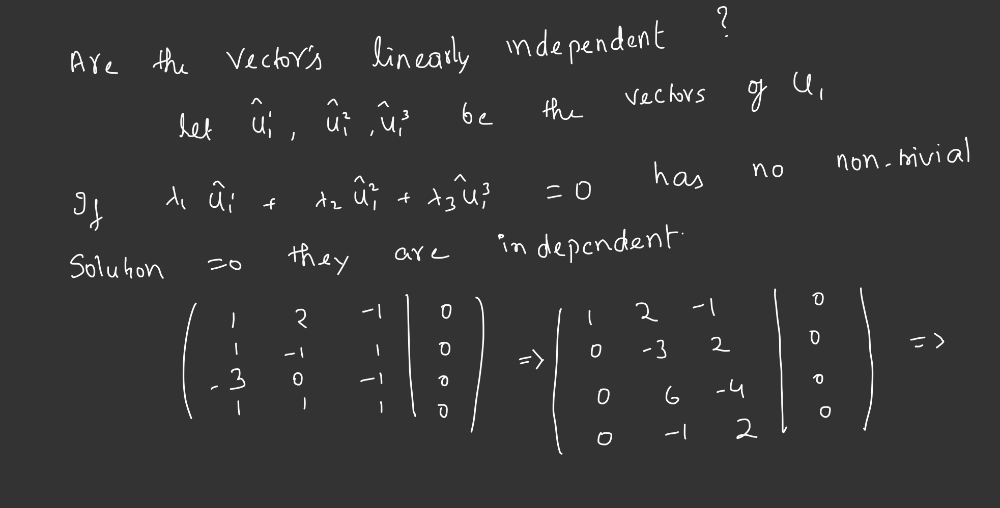 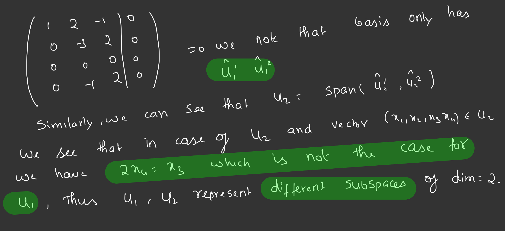 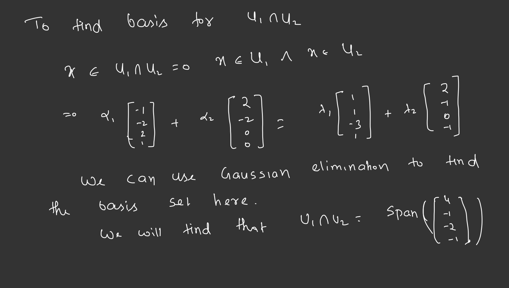
Summary
We understood and defined the notions of vector space, linear maps , span and linear independence. Using only abstract definitions ( with out the need for geometric vectors in \(R^{n}\) ), We realized that every vector space is characterized by a set of basis vectors. It turns out that these basis vectors suffice to succintly represent the entire vector space, due to the following property.
- Uniqueness: Let \(V\) be a vector space and
Bbe a set of basis vectors. Then every vector in \(V\) can be uniquely represented as a linear combination of vectors inB. Let us call the coefficients/scalar multiplesCoordinates.
Proof sketch: Write down the two different representations of a vector in \(V\). Subtract the two and see that since the basis set is independent, we will have that each of the scalar corresponding to each vector equal to zero. (something like (a1-c1)\(\hat b_1\) + (a2-c2)\(\hat b_2\) \(\dots\) = 0, implying a1=c1,a2=c2 etc as \(\hat b_1\),\(\hat b_2\) etc are linearly independent.)
- Fixed Count: For any vector space eventhough the specific set of basis vectors might vary, the number of vectors in the set remain same. Let’s call it the
dimension.
Proof sketch: This statement can be seen more clearly if we try to convince us of following two facts: - Consider a basis set B with size n of the vector space \(V\). Any set of vectors smaller than n can’t span the space \(V\).
- Similarly and set of vectors in \(V\), of size greater than
ncan’t be linearly independent.
Above statements can be seen clearly by just attempting to write down what they imply. See how it boils down to characterizing solutions to system of linear equations. Below I show for one case:
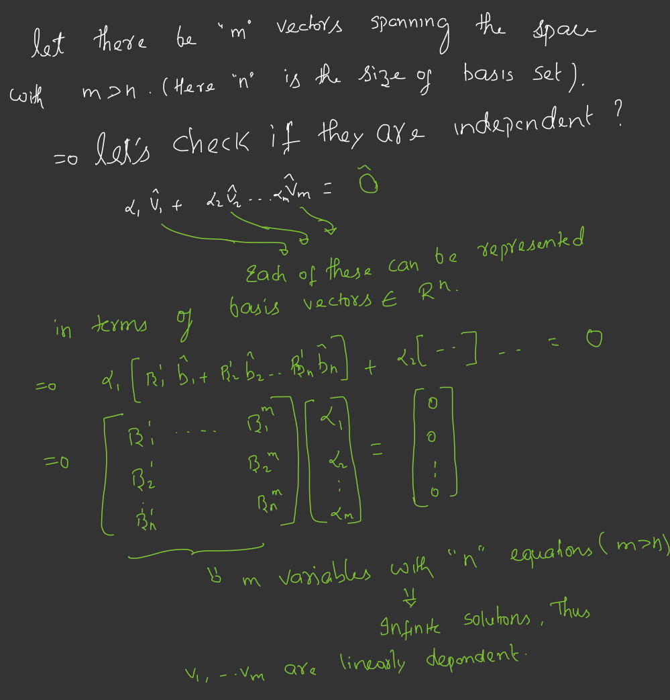
Above properties gives us an equivalence between vectors in \(R^{n}\) and generic vectors. As any vector \(\hat v\) belonging to a vector space can be uniqely represented by a list of co-ordinates [c1,c2,..cn] \(\in\) \(R^{n}\).
Example:
Find the coordinate vector of \(p(x) = 4 - x + 3x^2\)with respect to the basis \(\{x^2, x, 1\}\) ?
It’s just \((3,-1,4) \in R^{3}\)
Idea 2 : Linear Maps can be represented as a Matrix.
We learned that vector spaces can be succintly represented by the corresponding basis set. Now linear Maps(defined in previous section) between vector spaces can be represented by a matrix. Once we are given the basis for a vector-space any vector in the space is defined by the corresponding scalar multiples. Take any vector in \(R^2\), \(\hat a = (x,y)\). It can be written as \(\hat a = x\hat e_1 + y \hat e_2\), where \(\hat e_1 = (1,0),\hat e_2 = (0,1)\) are the vectors corresponding to co-ordinate axis(basis set). Also note how changing basis set changes the representation. Below I show how a matrix is just a convenient way of representing a linear mapping.
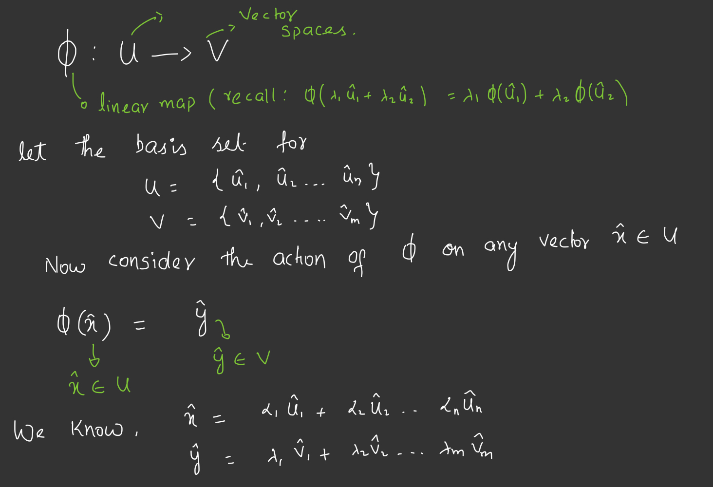
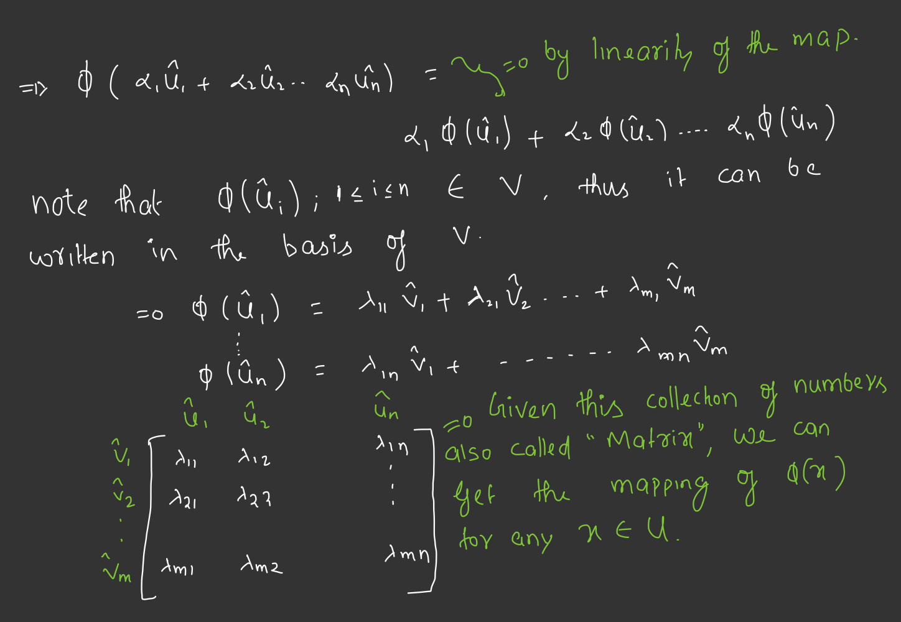
Important: Note how the structure of the linear map(linearity) and the vector-space are crucial for this succint representation to be possible.
This immediately directs us how best to define operations with matrix. Given a vector and a matrix corresponding to the linear map, their multiplication should give the resultant vector after applying the map. Similarly,matrix multiplication with another.
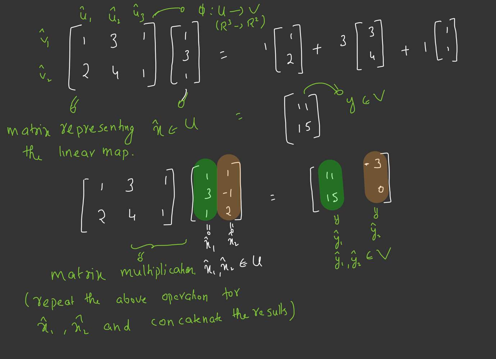
Important: Take time to internalize this. Typical definition of matrix multiplication might have seemed arbitrary but realizing that it is equivalent to the above might finally make it click. Also Matrix representation doesn’t make sense without specifying the corresponding basis-set. When not given we assume standard basis.(\(\hat e_1,\hat e_2\) etc)
Important: Before Proceeding Solve this toy problem (solution at the end)
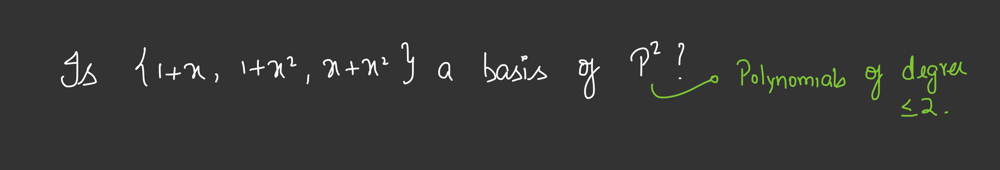
Better Representations : Change of basis, PCA, SVD.
Given some points from an n dimensional space, their representation will vary based on the chosen basis. Then, what is the right basis ?
Consider a linear map. We know that, It’s representation varies based on the chosen basis. First let’s learn how this representation changes when we change the basis.
Idea 3 : Change of Basis
Below I show how to get the representation(matrix) corresponding to a linear map when we know it for one basis and asked to get it in another basis. Here we used the symbol \(P^{-1}\) to represent the inverse of a mapping. We will later discuss how to derive this from first principles,but the typical highschool algorithm involving determinants or gaussian elimination should suffice at the moment.
We already understand that a matrix vector multiplication is nothing but representing the given vector in different bases. To ensure we are completely clear on this, let’s do a sample problem.
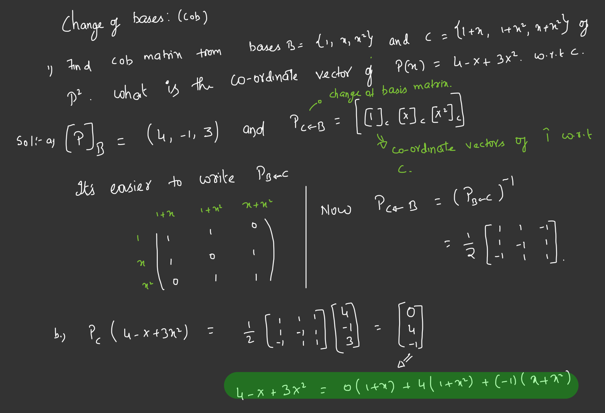
Now let’s see the effect of a linear map under the new basis.
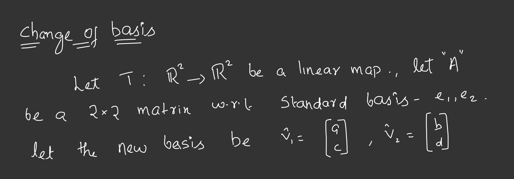
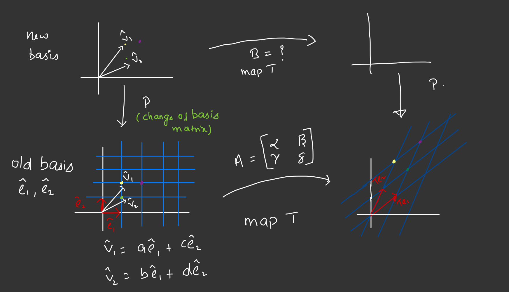
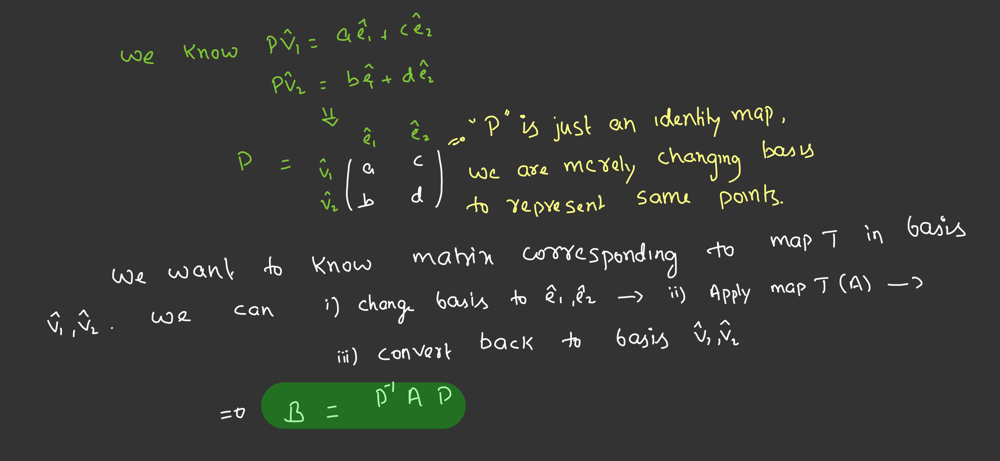
Let’s walkthrough what we have done above again. - We realized that a matrix represents a linear map and vice-versa. - Give points in the basis \(v_1\),\(v_2\) we can find a linear map that finds new coordinates of those points with the basis \(e_1,e_2\). We know how to get this matrix by looking at the effect of the linear map \(P\) on the basis set \(v_1\),\(v_2\).(check the note on matrix multiplication,if this is not clear). - Now the trick is to get \(B\), we can change the basis to \(e_1,e_2\) and use the representation of the map under this basis - \(A\) and then convert back to new basis,(round tour) to get \(B\).
Befor we proceed, let’s understand linear maps,this would make our study of matrix decompositions more natural.
Linear Maps - Properties
We already know the definition of a linear map and the fact that it can be represented by a matrix. And we have also seen how the change of basis effects a given linear map. But why change basis ? How does these ideas help solve problems ? Let’s gain insight by solving some problems.
Q1. What is the standard matrix for the transpose map of a 2*2 matrix w.r.t standard basis ?
Q2. Find the standard matrix of the differentiation map D : P 3 → P3 with respect to the standard basis {1, x, x2 , x3} ⊂ P3
Q3. compute the fourth derivative of \(x^2e^x + 2xe^x\).
Below We will see how changing basis is useful sometimes. The key is to see that matrix multiplication is easy for diagonal matrices. Thus if a give linear transformation be converted be done in a basis such that the corresponding matrix is diagnol - we can recursively apply that transformation easily. Will be clear with below examples.
Q4. Find 10th fibonacci number ?
Q5. What is the standard matrix for the transpose map of a 2*2 matrix w.r.t Pauli’s basis ?
Q6. Compute \(\int x^2e^{3x} dx\) using matrices
Extras
To further understand the structure of the vector space, below I share some other fun ideas. Some of these are a bit hard to understand and not strictly necessary. You can safely skip.
Solutions
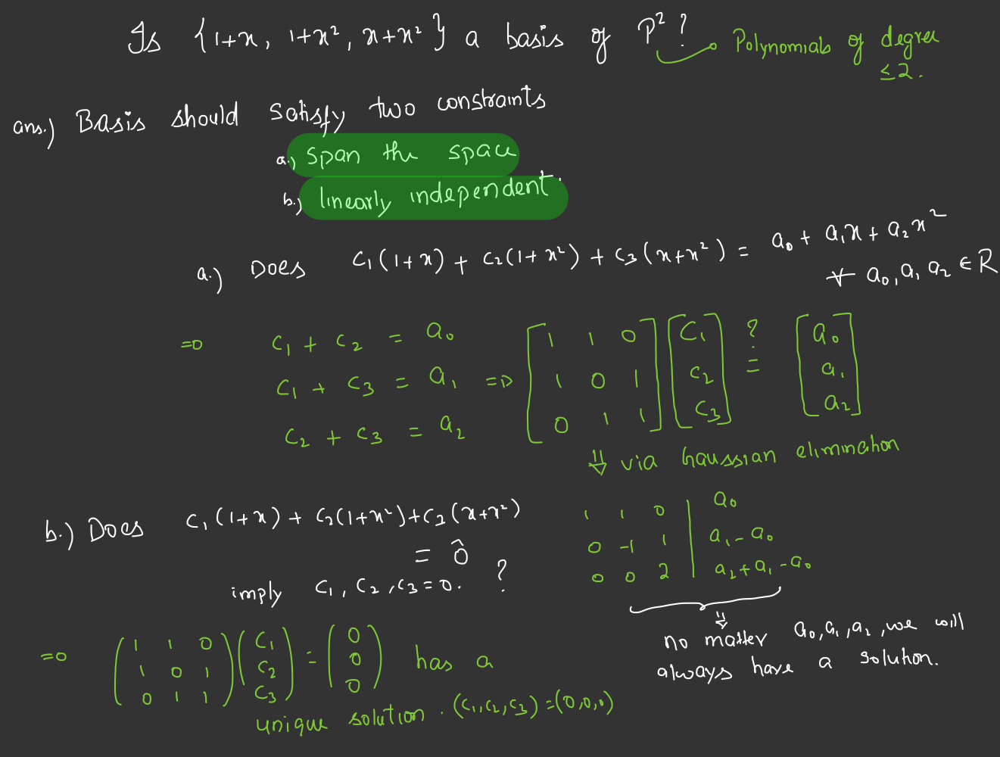